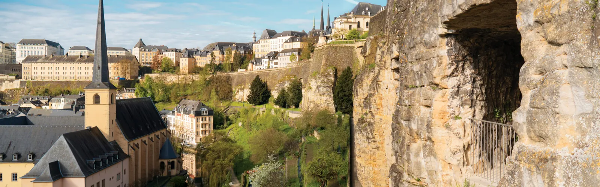
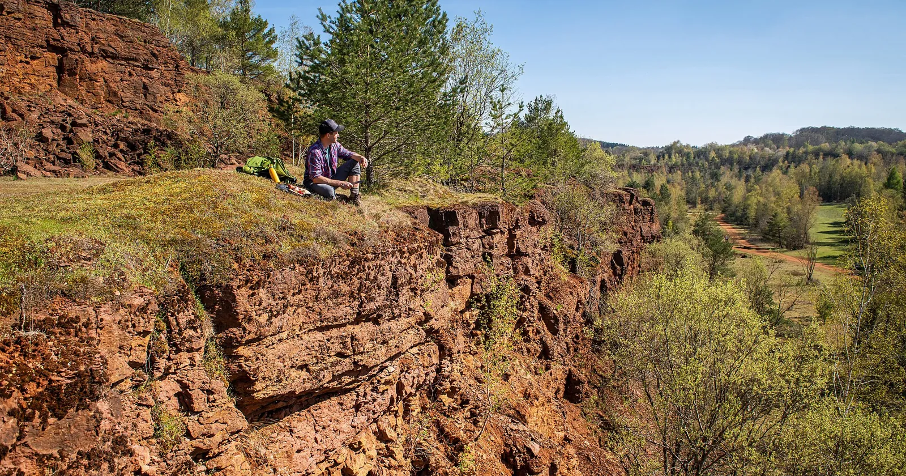

Frisange sits at the southern tip of the Grand-Duchy, four kilometres from the French line and fourteen south of the capital. The chart below carries every site within a thirty-kilometre belt — and a few, marked ⚠, that lie just over the edge.
PLATE II
The Radial Chart from the Linster Table
Bearings measured from true north at the Linster table. Distances are road kilometres, not crow-flight. Dotted lines are border rivers (Moselle, NE) and the Franco-Luxembourgish line (SW).
★The table · Frisange, your fixed point
●In range · ≤ 30 km road distance
●Edge · 25–30 km, factor in time
○Over · plotted but outside the brief
⛯Compass rose · true-north oriented
—River · Moselle (east) / Gander (south)
‐ ‐Driving line · principal road from Frisange
⚠Edge mark · sites at or past the limit
PLATE III
The Master's Ledger of Distances
Pin these before planning — three things people commonly assume are close are not.
Adults-only complement next door to the spa — slots, roulette, blackjack, restaurants, live shows[65].
The Middle Ring10 — 20 KM · FIFTEEN TO TWENTY-FIVE MINUTES
⛯ BEARING 335° · 15 KM NNW · THE UNAVOIDABLE ANCHOR
LUXEMBOURG CITY

Hit two things before sitting down to dinner: the Bock Casemates — a section of the 23 km UNESCO-listed tunnel network — and the Chemin de la Corniche, the 1.1 km 17th-c. rampart promenade Batty Weber called "the most beautiful balcony of Europe."[1][3][4]
The Tour aux Puces — 14-sided ex-keep of the Counts of Luxembourg, archaeology museum, free first Sundays. Pair with Château de la Grange at Manom.
⛯ BEARING 80° · 16–18 KM ENE
Wellenstein · Remich
The southern Moselle cellars. Caves de Wellenstein (the largest Vinsmoselle site, 240 winegrowers) for breadth; Caves St Martin for ~1 km of limestone galleries at 12°C, Crémant tastings.
A 160 m² Roman mosaic, over 3 million tiles, depicting amphitheatre scenes — one of the largest and finest north of the Alps still on its original site[94].
OpenApr–Sep · Tue–Sun
ClosedMon · Dec–Feb
"The Minett UNESCO Biosphere — the Terres rouges — designated 28 October 2020
eleven municipalities · a century of iron mining hollowed the landscape · the brownfields are being rewilded[20][21]"
Two 300-foot 1993-decommissioned blast furnaces, walkable platform at 40 m over the Cité des Sciences[22]. The Massenoire next door hosts the rotating "Belval & More" exhibitions on steel heritage. Pair with Prënzebierg–Giele Botter reclaimed open-pit (orchids, bats, amphibians).
The European Museum reopened June 2025 after major renovation for the 40th anniversary. The MS Princesse Marie-Astrid moors here — the boat name traces back to the vessel that hosted the 1985 signing[46]. Tri-point: Lux / FR / DE.
Heritage steam line through Minett Park; open-air industrial museum with grocery, station, the Titelberg Celtic oppidum, and the Minièresbunn mine train into France.
Aquasud's six indoor + two outdoor pools and adults-only wellness; the 1535° Creative Hub fills 16,000 m² of an ex-ArcelorMittal factory (named for iron's melting point).
Wormeldange · Ehnen · Ahn · Machtum open their cellars together. Free MS Princesse Marie-Astrid shuttle on Sunday. The Ahn estates (Aly Duhr 5th gen, Schmit-Fohl 7th gen) sit at the very edge of the circle.
⛯ INSET · MINETT UNESCO BIOSPHERE · TERRES ROUGES
The Esch / Belval / Rumelange triangle

A century of iron mining (late 1800s → 1990s) hollowed the southern industrial corridor. The whole shorthand is Terres rouges. Brownfields are now reclaimed for biodiversity[21]. Eleven municipalities under the 2020 designation[20]. Belval has been part of the biosphere zone since 2016[33].
Minett Trail~90 km · 10 stations · 6.5–15.7 km stages
Three sirens you might be tempted to chase. The chart says don't — at least, not this weekend.
Mullerthal · Echternach
Luxembourg's "Little Switzerland" — 112 km trail around Echternach. 45.7 km by road from Frisange. Treat as a separate day-trip[64][78].
Hackenberg Maginot fort
The largest publicly accessible Maginot fort — 10 km of galleries, 19 combat blocks, 2.5–3 h tours at 12°C. Around 40+ km via Thionville. Bundle with a Thionville day, not the Linster weekend[85][86].
Villa Borg DE · ~32 km
Only fully restored Roman villa of its kind, working baths, gardens, Roman tavern. Two kilometres over the line — close enough to bundle with Villa Nennig and Schengen as a Saarland half-day[93].
Five major tech events fall within 30 km of Frisange in the rest of 2026 — Nexus, ICT Spring, OSC Luxembourg, hack.lu, Luxembourg Internet Days.
COLOPHON
Drawn from the canonical survey of ninety-five sources, set in IM Fell & Cormorant Garamond.
Bearings approximate; ledger distances are road kilometres.
Plate VII (the sources) lies in the canonical's footnotes — return there for the complete apparatus. ⛯Atlas · Default view · Map · Atlas